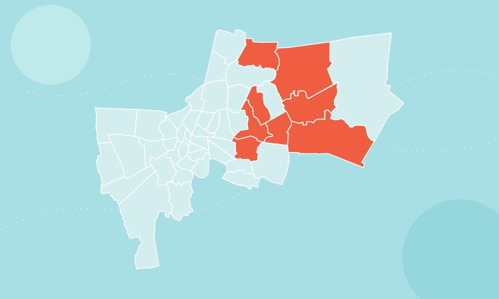

พื้นที่เร่งด่วน
แฟลตคลองจั่น: ตั้งวอร์รูมและครัวสนามเพื่อประชาชนราว 20,000 คน
เคหะร่มเกล้า: เร่งอพยพและลำเลียงอาหารด้วยรถสูงและเรือ
คลองหลัก: คลองแสนแสบ คลองเปรมประชากร และคลองประเวศมีระดับสูง

ศูนย์รวมข้อมูลสถานการณ์ ผลกระทบ เศรษฐกิจ และแผนที่เชิงโต้ตอบระดับเขต โดยรวบรวมจาก กทม. ปภ. และสำนักข่าวที่ตรวจสอบได้
ข้อมูลในหน้านี้เป็นภาพรวมจากรายงานข่าว ไม่ใช่ข้อมูลระดับน้ำแบบเรียลไทม์ ใช้แผนที่เพื่อค้นหาเขต และตรวจสอบสถานการณ์ล่าสุดจากหน่วยงานต้นทางอีกครั้ง
ภาพรวมจากรายงานช่วง 23–28 กันยายน 2569
แฟลตคลองจั่น: ตั้งวอร์รูมและครัวสนามเพื่อประชาชนราว 20,000 คน
เคหะร่มเกล้า: เร่งอพยพและลำเลียงอาหารด้วยรถสูงและเรือ
คลองหลัก: คลองแสนแสบ คลองเปรมประชากร และคลองประเวศมีระดับสูง
| รายการ | รายงาน |
|---|---|
| ศูนย์พักพิงที่เตรียม | 233 แห่ง |
| ผู้ใช้ศูนย์พักพิง | ประมาณ 4,200–4,900 คน* |
| ผู้ต้องการอาหารส่งถึงพื้นที่ | 60,000–70,000 คน |
| สายด่วน 1669 | มากกว่า 7,200 สาย/วัน |
ม.หอการค้าไทยประเมินผลกระทบช่วง 25–29 ก.ย. กรณีฐานทั้งประเทศ 12,283 ล้านบาท โดยกรุงเทพฯ คิดเป็น 7,014 ล้านบาท หรือ 57% และยังไม่รวมความเสียหายต่อบ้าน รถ สินค้าคงคลัง และผลผลิตเกษตร
ตัวเลขอ้างอิงจากรายงานข่าวที่เผยแพร่ โดยระบุวันและแหล่งข้อมูลกำกับแต่ละส่วน
สำนักการระบายน้ำ กทม.: มีนบุรี 101.5, คลองสามวา 96.5, ลาดกระบัง 86.5 มม.
ม.หอการค้าไทย: กรณีฐาน 12,283 ล้านบาท
| เขต | สถานะ | พื้นที่/จุดอ้างอิงจากข่าว |
|---|
หมายเหตุ: สีในแผนที่แสดง “มีรายงานยังท่วม” ไม่ใช่ความลึกน้ำแบบเรียลไทม์ เพราะแหล่งข่าวไม่ได้เปิดตัวเลขความลึกครบทุกเขต
เปิดแหล่งข้อมูลต้นทางเพื่อตรวจรายละเอียดและข้อมูลที่ใหม่กว่า ก่อนใช้ตัดสินใจเดินทาง
Boundary: Bangkok Districts GeoJSON
Tile: OpenStreetMap Standard Tiles
Library: Leaflet 1.9.4 + Chart.js 4.4.7 via jsDelivr
ไม่มี API key และไม่มี secret ฝังในไฟล์; โปรดปฏิบัติตาม OSM Tile Usage Policy